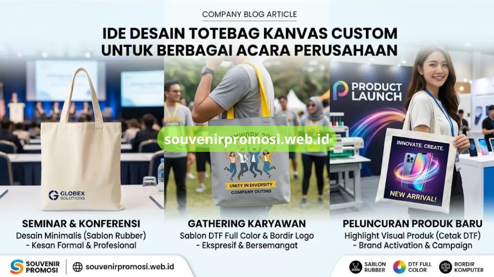

Poin Penting
- Ide desain totebag kanvas dapat disesuaikan untuk berbagai acara korporat.
- Seminar formal mengedepankan tata letak minimalis dan warna netral.
- Gathering karyawan bisa menggunakan desain ekspresif dan bordir untuk merchandise.
- Product launching memanfaatkan cetak DTF full color untuk menampilkan visual produk yang tajam.
Daftar Isi
- Pendahuluan
- Desain Totebag untuk Seminar dan Konferensi
- Tata Letak Logo Minimalis
- Kombinasi Warna Netral
- Desain Totebag untuk Gathering
- Sablon Full Color dengan Tagline Acara
- Bordir Logo untuk Kesan Eksklusif
- Desain Totebag untuk Product Launching
- Highlight Produk melalui Cetak DTF
- Spesifikasi Desain di Souvenir Promosi
- Wujudkan Desain Totebag Kanvas Custom
- FAQ
Ide desain totebag kanvas custom disesuaikan dengan jenis acara perusahaan, mulai dari seminar formal, gathering karyawan, hingga peluncuran produk baru. Setiap tema acara memiliki kebutuhan tata letak logo, kombinasi warna, dan teknik cetak yang berbeda agar totebag terlihat relevan dan tetap dipakai oleh penerimanya setelah acara selesai.
Souvenir Promosi menyediakan katalog desain totebag kanvas custom yang dapat disesuaikan langsung dengan brand guideline perusahaan melalui souvenirpromosi.web.id.
Desain Totebag Kanvas untuk Seminar dan Konferensi Profesional
Totebag kanvas untuk seminar umumnya memakai kombinasi warna netral seperti krem, abu-abu, atau navy dengan logo berukuran sedang di bagian depan. Tata letak logo tunggal di tengah atau pojok bawah kiri memberi kesan formal dan mudah dikenali dari kejauhan.
Souvenir Promosi mengerjakan desain seperti ini menggunakan sablon rubber satu hingga dua warna agar biaya produksi tetap efisien untuk pemesanan dalam jumlah besar.
Tata Letak Logo Minimalis pada Totebag Kanvas
Tata letak logo minimalis menempatkan satu elemen visual utama, seperti logo atau wordmark, tanpa elemen dekoratif tambahan. Pendekatan ini banyak dipakai untuk totebag konferensi karena mudah dipadukan dengan warna kanvas natural atau krem yang tersedia di katalog Souvenir Promosi.
Kombinasi Warna Netral untuk Kesan Profesional
Warna kanvas netral seperti krem, putih gading, dan abu-abu muda menjadi dasar yang fleksibel untuk berbagai warna logo korporat. Souvenir Promosi menyediakan pilihan warna kanvas ini sebagai bahan dasar sebelum masuk tahap cetak logo.
Desain Totebag Kanvas untuk Gathering dan Employee Engagement
Acara gathering karyawan biasanya menggunakan desain yang lebih ekspresif dibanding seminar formal, misalnya dengan tambahan tagline acara atau ilustrasi ringan di samping logo perusahaan. Kombinasi warna kanvas yang lebih berani, seperti navy dengan aksen kuning atau merah pada tali, sering dipilih untuk membedakan totebag gathering dari merchandise korporat sehari-hari.
Sablon Full Color dengan Tagline Acara
Sablon DTF full color memungkinkan penambahan tagline, tahun acara, atau elemen grafis tambahan di sekitar logo utama. Teknik ini tersedia di souvenirpromosi.web.id untuk pesanan yang membutuhkan variasi warna lebih dari tiga warna.

Bordir Logo untuk Kesan Eksklusif pada Merchandise Karyawan
Bordir logo pada totebag gathering memberi kesan lebih personal dan tahan lama dibanding sablon, terutama jika totebag akan dipakai sebagai merchandise apresiasi karyawan jangka panjang. Souvenir Promosi mengerjakan bordir dengan detail benang rapi pada logo berukuran kecil hingga sedang.
Desain Totebag Kanvas untuk Product Launching dan Brand Activation
Acara peluncuran produk baru membutuhkan desain totebag yang menonjolkan visual produk, bukan hanya logo perusahaan. Ilustrasi produk, warna kemasan, atau elemen kampanye biasanya dicetak penuh warna pada satu sisi totebag menggunakan teknik DTF agar detail visual tetap tajam.
Highlight Produk melalui Cetak DTF
Cetak DTF memungkinkan reproduksi gambar produk atau key visual campaign dengan gradasi warna yang kompleks pada permukaan kanvas. Souvenir Promosi menyediakan layanan cetak ini untuk kebutuhan brand activation dan peluncuran produk.
Spesifikasi Desain yang Tersedia di Souvenir Promosi
Katalog desain totebag kanvas custom di Souvenir Promosi mencakup pilihan warna kanvas natural dan kombinasi, tiga teknik cetak yaitu sablon rubber, DTF full color, dan bordir komputer, serta variasi ukuran tas dari mini hingga standar korporat. Seluruh spesifikasi ini dapat dikombinasikan sesuai tema acara dan disesuaikan dalam bentuk mockup sebelum produksi massal dimulai.
Wujudkan Desain Totebag Kanvas Custom Anda di souvenirpromosi.web.id
Tim desain Souvenir Promosi siap mengeksekusi konsep totebag kanvas custom sesuai tema acara perusahaan, mulai dari seminar formal hingga product launching berskala besar.
Kirimkan referensi desain atau brand guideline melalui souvenirpromosi.web.id untuk mendapatkan mockup dan penawaran harga produksi grosir.
Ide desain totebag kanvas custom disesuaikan dengan jenis acara, mulai dari tata letak minimalis untuk seminar, sablon full color untuk gathering, hingga cetak DTF untuk product launching. Katalog desain lengkap dengan pilihan warna kanvas, teknik cetak, dan ukuran tersedia di souvenirpromosi.web.id untuk pemesanan grosir souvenir promosi perusahaan.